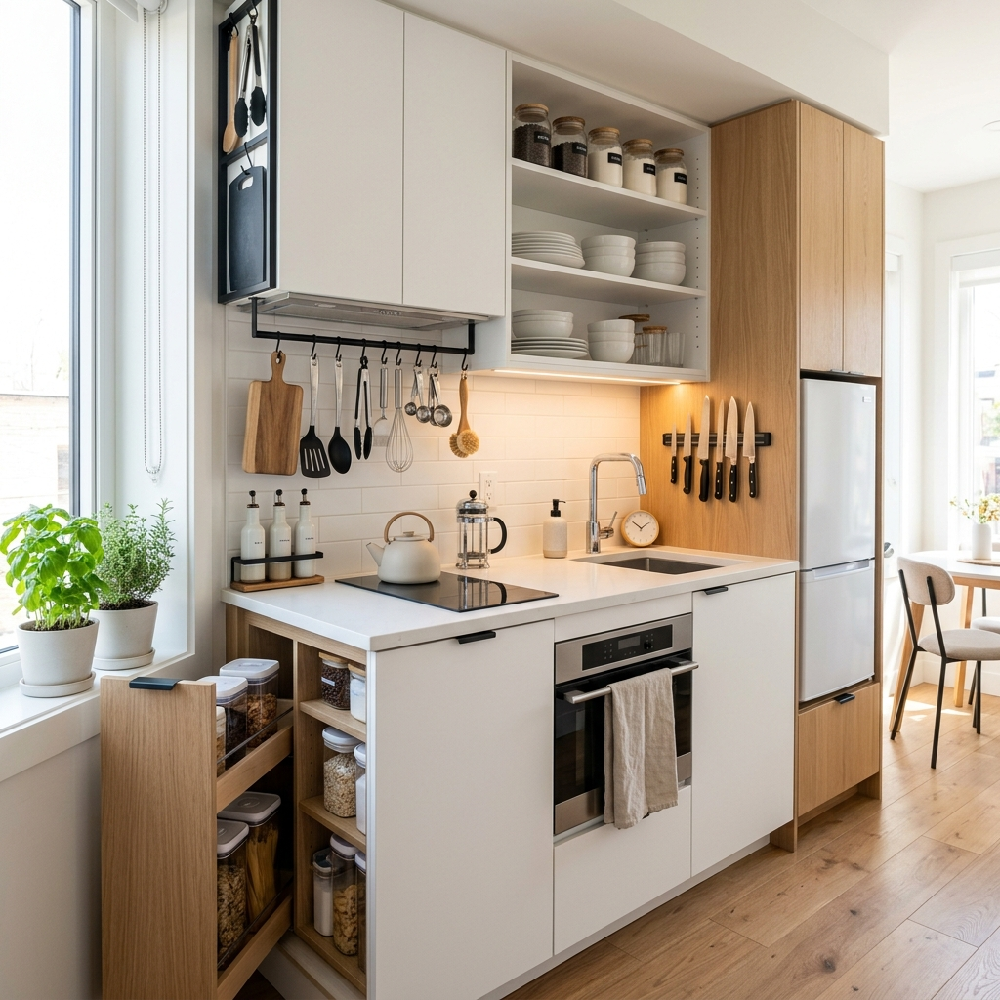

Geladeira Consul Não Gela a Parte de Baixo: O Que Fazer Passo a Passo (Guia Definitivo)

Esse sintoma é extremamente comum em geladeiras Consul Frost Free Duplex (como as linhas Bem Estar, CRM35, CRM38, CRM42, CRM43, CRM50 e similares) e também em outras marcas que usam o mesmo princípio: todo o frio é gerado na serpentina do freezer e empurrado para o refrigerador por um pequeno ventilador através de canais de ar internos. Se qualquer etapa desse caminho travar, a parte de baixo esquenta rapidamente.
Tabela de diagnóstico rápido
Compare o comportamento da sua geladeira com os sintomas abaixo para identificar a causa mais provável antes de gastar com visita técnica:
| Sintoma observado | Causa provável | Solução recomendada |
|---|---|---|
| Freezer congela bem, mas parte de baixo não esfria nada | Duto de ar bloqueado por gelo no evaporador | Degelo manual de 24h fora da tomada |
| Volta a gelar após degelo, mas para de novo em 7 a 15 dias | Sensor de degelo, fusível térmico ou resistência queimada | Teste com multímetro e troca da peça defeituosa |
| Parte de baixo sua água nas paredes e gela pouco | Borracha da porta ressecada/desalinhada ou porta empenada | Teste da folha de papel, limpeza ou troca da gaxeta |
| Sem barulho de vento no freezer com o motor ligado | Motoventilador travado por gelo ou queimado | Descongelar 24h; se continuar parado, trocar ventilador |
| Nem freezer nem refrigerador gelam (motor quente direto) | Falta de gás refrigerante, vazamento ou compressor fraco | Chamar técnico especializado em refrigeração |
1. Excesso de gelo no evaporador e duto obstruído (faça o degelo de 24h)
Mesmo sendo Frost Free, a geladeira Consul pode acumular um bloco sólido de gelo atrás da tampa plástica do fundo do freezer. Isso acontece quando a porta fica entreaberta durante a noite, há excesso de umidade no ambiente ou o dreno entope. Esse gelo fecha completamente o canal por onde o ar frio desce para a parte de baixo.
- Retire os alimentos perecíveis e transfira para caixa térmica com gelo;
- Desligue o plugue da tomada e deixe as duas portas totalmente abertas por 24 horas completas (não bastam 4 ou 6 horas, pois o gelo dentro dos dutos de isopor demora para derreter);
- Coloque panos ou uma bandeja rasa embaixo da geladeira, pois a bandeja traseira sobre o motor pode transbordar com o excesso de água;
- Após 24h, seque o interior com pano limpo, ligue na tomada e aguarde de 3 a 6 horas para verificar se o ar frio voltou a sair nas frestas da parte de baixo.
2. Ajuste incorreto do controle de temperatura ou damper
Vários modelos Consul possuem dois controles: o painel eletrônico externo (ou interno) e um botão deslizante ou giratório no fundo do freezer/refrigerador chamado damper (borboleta de fluxo de ar). Se o damper estiver ajustado para "Máximo no Freezer", ele fecha quase totalmente a passagem de ar frio para a parte de baixo.
- Deixe o controle principal no nível Médio para testar;
- Verifique se a tecla "Turbo Freezer" ou "Compras" não ficou travada ativada;
- No controle interno do freezer (quando houver), posicione na posição Normal / Médio para equilibrar o fluxo de ar entre os dois compartimentos.
3. Borracha de vedação da porta ressecada ou desalinhada
Se a borracha (gaxeta) da porta do freezer ou do refrigerador não vedar 100%, o ar quente e úmido da cozinha entra o tempo todo. Além de impedir a parte de baixo de atingir a temperatura correta, essa umidade vira gelo no evaporador e entope o duto em poucos dias.
Como fazer o teste da folha de papel:
- Prenda uma folha de papel sulfite entre a porta e o gabinete da geladeira e feche a porta;
- Puxe a folha devagar. Se ela deslizar sem nenhuma resistência, a borracha perdeu a vedação naquele ponto;
- Repita o teste nos quatro lados das duas portas;
- Limpe a borracha com pano úmido e detergente neutro e confira se a geladeira está levemente inclinada para trás (ajustando os pés niveladores frontais) para que a porta feche por gravidade. Se a borracha estiver rachada ou dura, faça a substituição.
4. Saídas de ar bloqueadas por potes e alimentos
Pode parecer simples, mas é uma das causas mais frequentes em geladeiras cheias. As entradas e saídas de ar frio ficam geralmente na parede do fundo (tanto no freezer quanto na prateleira superior do refrigerador). Potes grandes, panelas, sacolas plásticas ou garrafas encostadas na parede traseira impedem a circulação do ar.
Reorganize as prateleiras deixando pelo menos 3 a 5 cm de folga livres na frente das grades de ventilação e evite forrar as prateleiras de vidro/grade com plásticos ou toalhas que bloqueiam a descida do ar frio.
5. Ventilador (motoventilador) do freezer travado ou queimado
Sem o ventilador girando, o frio fica preso no freezer e não desce para o refrigerador. Você pode fazer um teste auditivo simples:
- Com a geladeira ligada e o motor (compressor) funcionando, abra a porta do freezer e pressione com o dedo o interruptor da porta (pino plástico que apaga a luz e aciona o ventilador);
- Aproxime o ouvido do fundo do freezer: você deve escutar o som suave do vento circulando;
- Se não houver barulho algum após o degelo de 24h (ou se houver ruído metálico/batida), o motoventilador pode estar travado, queimado ou sem alimentação da placa eletrônica.
6. Sensor de degelo, fusível térmico ou resistência queimada
Se você fez o degelo manual de 24 horas, a geladeira voltou a gelar perfeitamente embaixo, mas entre 5 e 15 dias depois o problema retornou, o diagnóstico é quase certeiro: o sistema de degelo automático não está derretendo o gelo formado diariamente.
Nas geladeiras Consul Frost Free, esse conjunto é composto por três peças principais (geralmente trocadas em kit de degelo):
- Sensor de degelo (termistor 2,7k na maioria das Consul): informa à placa eletrônica a temperatura da serpentina; quando altera a resistência, a placa não aciona o degelo;
- Fusível térmico: peça de segurança que abre o circuito em caso de superaquecimento; quando queima, a resistência nunca mais liga;
- Resistência de degelo: aquece periodicamente para derreter o gelo do evaporador.
Quem tem afinidade com manutenção elétrica e um multímetro no kit de ferramentas essenciais para ter em casa consegue testar a continuidade do fusível e da resistência (com a geladeira sempre fora da tomada). Caso contrário, vale acionar um técnico informando o modelo exato da etiqueta interna (ex.: CRM43NK) para levar o kit compatível.
7. Falta de gás ou problema no compressor (quando chamar técnico)
Se nem a parte de baixo nem o freezer estão gelando direito, o motor atrás da geladeira trabalha quente sem desligar e não há formação de gelo nem mesmo na serpentina, o problema não é apenas o duto entupido. Nesse cenário, as causas costumam ser:
- Vazamento de gás refrigerante (microfuro na tubulação);
- Entupimento no filtro secador ou tubo capilar;
- Relé de partida queimado ou compressor com baixa compressão.
Esses reparos exigem equipamentos de solda, bomba de vácuo e balança de carga de gás — portanto, é o momento certo de chamar uma assistência técnica de confiança.
Perguntas frequentes sobre geladeira que não gela embaixo
Por que a geladeira Consul Frost Free gela em cima e não gela embaixo?
Porque todo o frio nasce no freezer e depende de dutos livres, ventilador funcionando e degelo automático em dia para chegar ao refrigerador. Quando o gelo bloqueia a passagem de ar, só o freezer permanece gelado.
Desligar a geladeira por 24 horas resolve o problema?
Resolve de vez se o bloqueio foi pontual (porta aberta, excesso de umidade ou queda de luz). Se o defeito voltar em menos de duas semanas, indica peça queimada no sistema de degelo.
Posso usar faca ou secador de cabelo para acelerar o degelo?
Não. Facas podem furar a serpentina de gás e o calor concentrado do secador deforma o plástico e o isopor interno. O degelo natural com as portas abertas é sempre o mais seguro.
A parte de baixo da geladeira pode ficar quente se o aparelho estiver muito encostado na parede?
Sim. Deixe ao menos 10 cm de espaço atrás e nas laterais para a troca de calor do condensador e nunca pendure roupas úmidas na grade traseira.
Está com problema em outro eletrodoméstico? Veja também nosso guia sobre máquina de lavar que não centrifuga e explore mais tutoriais em Consertos Domésticos.
Sobre o Autor: Francisco Alves
Com mais de 15 anos de experiência prática em reformas e reparos residenciais, Francisco dedica-se a ensinar pessoas comuns a cuidarem de seus lares de forma independente, segura e econômica.